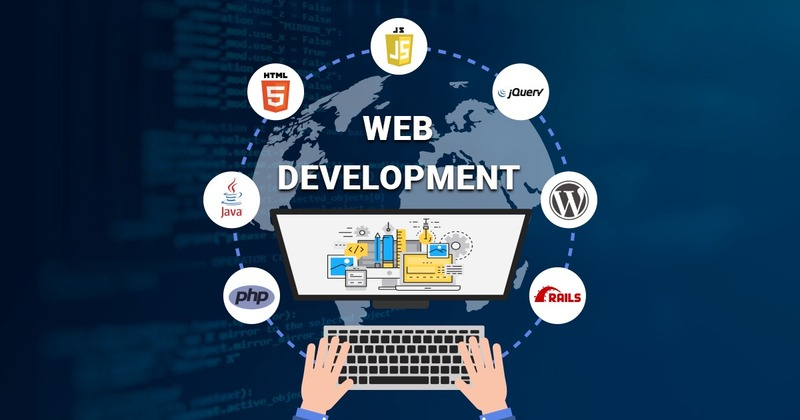
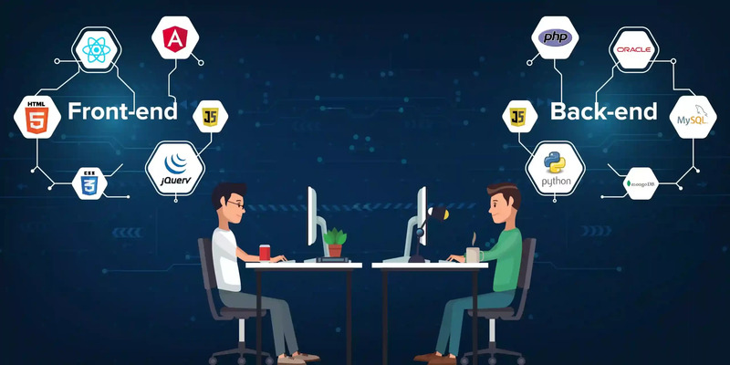

Heardbygod web developer portfolio
Welcome to my portfolio website, here i show case my technical skills and what i have to deliver to the world.
I'm IT support specialist, I'm certified in CCNA (Cisco Certified Network Associate) from Training Square London, I'm certified software engineering - specialized in Back-end from ALX Africa.
I'm available to offered my services at your earliest.
Web Developer


Language Proficiency:
- HTML
- CSS
- Javascript
- Node
- React
- PostgreSQL
- Web3 and DApps
Network Engineer


CCNA Proficiency:
- Network security concepts
- Cisco routing and switching
- Network configuration and troubleshooting
- TCP/IP, DNS, DHCP
- VLANs and subnetting
- Routing protocols (EIGRP, OSPF)
- WAN technologies (MPLS, Frame Relay)
- Network monitoring and management tools (e.g., Wireshark, Nagios)
- Troubleshooting network issues
- Strong knowledge of OSI model
Follow Me:
About Me
Contact Me